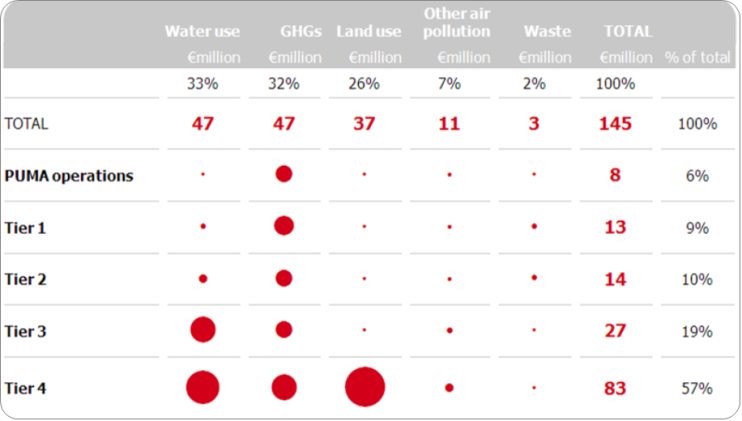
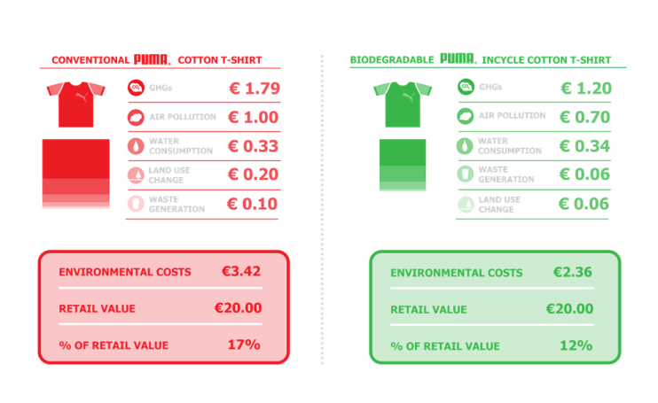

23 - 24 November • Edinburgh, UK
23 - 24 November • Edinburgh, UK
There are many reasons why companies would want to account for their natural capital impacts... I’ll come to those later, but first I want to respond to the question ‘how do you actually go about it?’
There are two versions of this answer; a technical one (a long answer beyond the scope of this blog – but if you want the detail, I’d be pleased to provide it...) and a shorter one. I’m aiming for the later!
I’ll start by describing how we helped PUMA, and parent company Kering, to publish the world’s first Environmental Profit & Loss statement in 2011, since if you are interested in this topic you are likely to be aware of it.
First – here is a view of the top line output.

Fig 1: PUMA Environmental Profit and Loss Account
So how do you actually go about creating an EP&L? First we had to measure PUMA’s operational and supply chain impacts, back to raw materials, in traditional sustainability metrics (tonnes of GHG emissions, waste disposal and air pollution, cubic meters of water consumption, and hectares of land use). No small challenge and as you can imagine, we did not engage with every company that is ultimately involved in the supply of goods and services to PUMA to collect this data. I would not be sitting here writing this blog, and may not be for some time!
As an environmentally conscious manufacturer, PUMA had already addressed its operational impacts and had been promoting the reporting of environmental performance data with strategic suppliers for some time.
This provided a great starting point. But which other suppliers did we need to engage with to measure material environmental impacts across PUMA’s supply chain? A common question for any company taking the first steps in managing its supply chain impacts.
The key to unlock this problem is provided by environmentally extended input-output (EEIO) modeling; an economic technique that identifies the interdependencies of different branches of an economy – the development of which won Wassily Leontief the 1973 Nobel Prize in Economics.
Our EEIO modelling identified hotspots of environmental impact across PUMA’s supply chain tiers around which we were able to pinpoint high impact suppliers for engagement. It also provided baseline data for lower impact areas of the supply chain. Following our engagement with PUMA’s high impact suppliers, we combined these data with PUMA’s previously collected data to improve the modelled baseline and deliver a complete environmental footprint across PUMA’s operations and supply chain.
The final stage was to apply natural capital valuations to the footprint data in order to create the EP&L statement. In order to stick to my promise to keep this overview concise, I’ll describe how we arrived at one of the key valuation metrics; water.
You might question the relevance of economically costing water use for PUMA – surely water is a resource that is paid for and therefore already accounted for? Unfortunately the local ecosystem goods and services provided by water - along with local water availability - are often not reflected in the market prices. Inaccurate pricing of water leads to perverse market incentives and presents risk to water intensive businesses inputs derived from vulnerable regions. For example, the Dry 11 of the 31 regions of mainland China provinces create 52% of China’s industrial output and 40% of agricultural products. As the name suggests, these are the driest provinces with water resources comparable to those of the Middle East – that is a severe water poverty level.
The UN estimates that global water use has been growing at more than twice the rate of population growth in the last century and The World Economic Forum cites ‘water supply crises’ among the most material risks facing the global economy. Understanding the non-market value of water helps to shift the focus from a supply-side approach of water management, to one that also recognizes the need for demand management of a limited resource. It also helps companies to identify risk from more accurate water pricing – and optimize operations and supply chains in line with rising costs.
We derive valuation coefficients for water using the Total Economic Value framework. To determine a local natural capital value for water for each of the geographies where PUMA’s suppliers are located, a relationship between non-market economic value and scarcity was derived from published research.
PUMA’s EP&L provided a strategic tool for the company to get ahead of the trend towards external natural capital costs being internalized by regulators, up to the point when products are sold. The next step was to extend the analysis to product level, in order to assess the environmental costs of a product at each stage of the life cycle - all the way to the consumer use phase.
In much the same way as the operational EP&L was created, we used EEIO modelling to identify high impact focus areas around which more detailed analysis was required. We then supplemented the modelled data with primary data provided in each product bill of materials with secondary data from regional Lifecycle Assessment studies and other academic literature.

Fig 2: PUMA Product Environmental Profit and Loss Account
Natural capital accounting at the product level identifies opportunities to holistically reduce environmental costs by switching raw materials or production locations – and improving processes. For example, PUMA was able to reduce the natural capital cost of its more sustainable InCycle Cotton T-Shirt by 31% compared to its conventional cotton T-Shirt. These results were primarily achieved by switching conventional cotton for organic cotton which avoids GHG intensive fertilizers, sourcing cotton from land with lower value ecosystem services, eliminating pollution and waste rich dying processes and introducing PUMA’s innovative “I’m Half the Bag I Used to Be” packaging. The more sustainable InCycle T-Shirt is also 100% compostable while the conventional shirt will be landfilled or incinerated.
Critically the Product EP&L highlighted PUMA’s ultimate success in decoupling natural capital cost from retail cost.
Trucost is now working with many companies to help them apply natural capital valuations to their business models in order to reduce environmental and social impacts where it counts, adapt to resource constraints, meet changing customer demands, tap into new sources of revenue and be prepared for future regulatory constraints. We provide data that can be incorporated directly into existing financial and operational systems to identify the net benefits of different technologies, procurement strategies or product life cycles.
Three billion new middle class consumers by 2030 will cause demand to continue to grow rapidly, while supply will continue to shrink. The consequences in the form of health impacts, water scarcity and lost ecosystem services will create tipping points for action by governments and societies.
Companies best positioned to compete in the future will be those that are able to decouple growth from unsustainable dependency on vulnerable natural resources. Natural capital accounting enables companies to do just that by identifying opportunities to optimize operations, supply chains and product portfolios in line with resource availability and environmental cost.
Against a backdrop of increasing regulatory and natural resource pressures, fuelled by population growth, companies that act now to develop low carbon, resource efficient technologies and services will be the successful companies of the future.
I look forward to sharing further case studies of natural capital accounting at the World Natural Capital Forum in Edinburgh on November 21st.
Richard Mattison is the CEO of Trucost. He will present in the session entitled 'What's available and what else do you need to help account for natural capital in your supply chain?' on Day 1 (Thursday 21 November) of the World Forum.
A summary of Trucost’s approach to valuing the natural capital impacts of greenhouse gas emissions, land use, waste, water and other pollutants is outlined in our research for the TEEB for Business Coalition: Natural Capital at Risk.
An edited version of this article first appeared in Triple Pundit
Video: HRH The Prince of Wales at the World Forum
Highlights from the 2015 World Forum
Share this page:
Share this page: